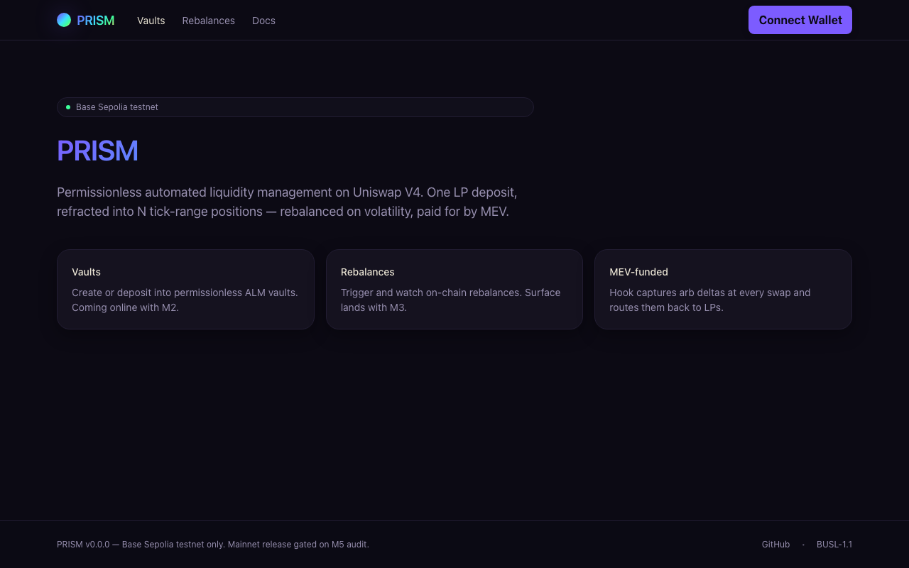
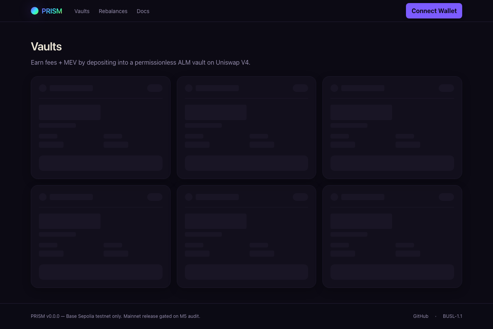
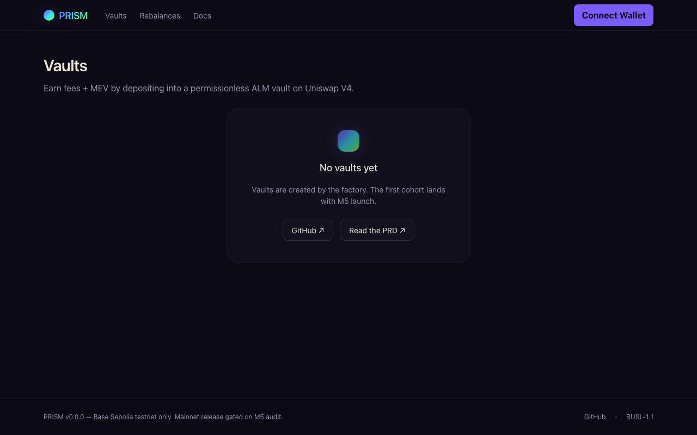
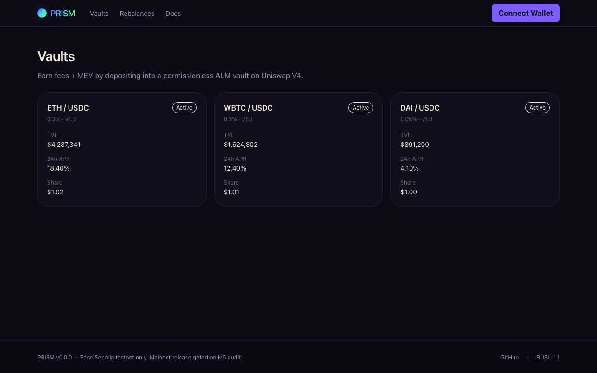
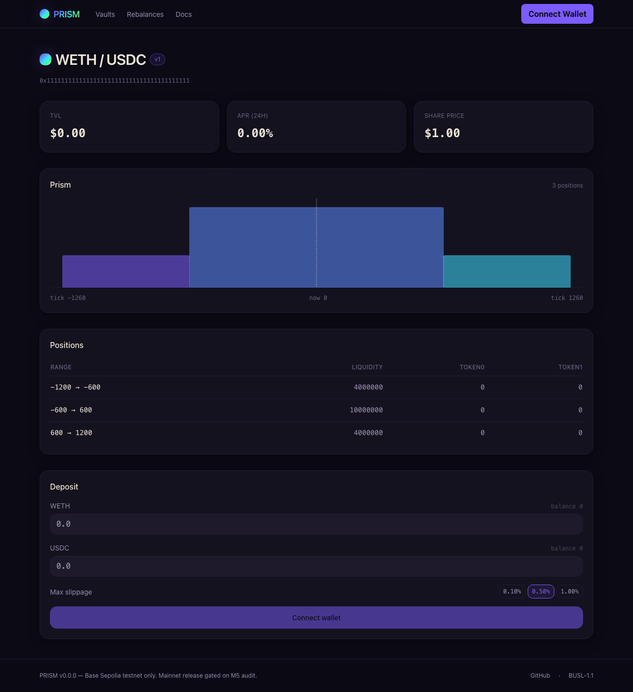
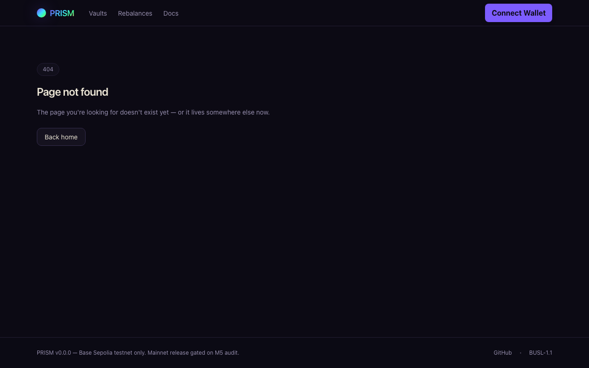
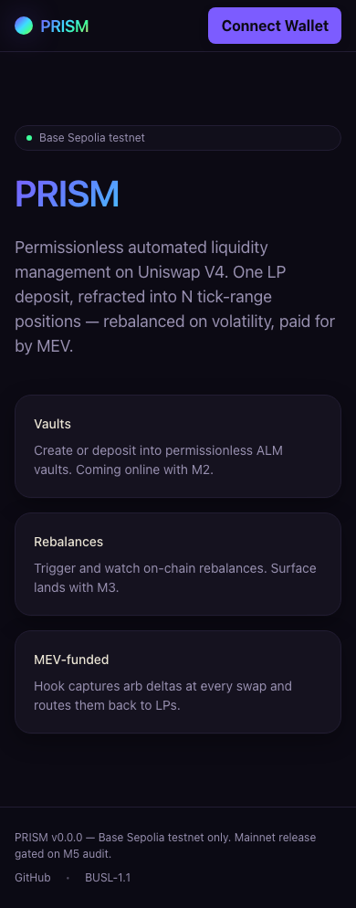
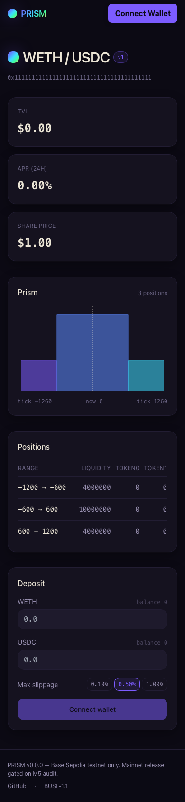

01 · What is PRISM?
PRISM is a permissionless automated liquidity manager (ALM) on Uniswap V4. A user makes one deposit of a token pair; the protocol refracts that deposit into multiple concentrated tick-range positions shaped by a strategy contract (e.g. a bell curve around the current price). When the price drifts or a time threshold elapses, an off-chain keeper triggers a rebalance that re-deploys the positions around the new center — and the V4 hook captures arbitrage deltas at every swap, routing the value back to LPs.
From a user perspective there are three primary verbs: browse vaults, deposit into one, withdraw. Everything else is automated.
02 · App shell & navigation
Every page is rendered inside a consistent shell: a header with the PRISM mark and primary navigation (Vaults, Rebalances, Docs), a wallet-connect CTA on the right, and a footer that pins the network/version + license info.
- Header stays fixed across navigation so the wallet button is always one click away.
- Footer calls out the testnet status: "Base Sepolia testnet only. Mainnet release gated on M5 audit."
- Connect Wallet opens RainbowKit; supports MetaMask, WalletConnect, Coinbase Wallet, and any injected EIP-1193 provider.
03 · Landing page
The landing page sets context: testnet badge, one-line product pitch, and three feature cards that telegraph what the protocol does (Vaults, Rebalances, MEV-funded). It is the only route that is fully readable without a wallet connected.

04 · Browsing vaults
The /vaults route is the core discovery surface. The list is implemented as a discriminated union over four states — loading, empty, error, active — so every state is handled at the type level and rendered to spec.
Live nowLoading state
While the vault registry is being read, the page renders six skeleton cards so the layout never collapses or flashes.

Live nowEmpty state
When no vaults exist (the testnet today, before the first deploy), users see a clear "No vaults yet" panel with links to the GitHub repo and the PRD so they can read up while waiting.

Cohort 1Active state
Once vaults are deployed, each card shows the pair name, fee tier, TVL, 24-hour APR, and current share price. The whole card is clickable into the vault detail page.

05 · Vault detail
The vault detail page (/vaults/[address]) is the densest view in the app. It packs four conceptual blocks in one scroll:
- Header — pair name, version pill, full vault address (copyable).
- Stat cards — TVL, 24h APR, share price.
- Prism chart — a custom SVG visualization of the current tick-range distribution (more on this in §06).
- Positions table — every active tick-range position with its liquidity and token balances.
- Deposit form — paired amount inputs, slippage selector, transaction state machine.

06 · PrismVisual chart
The Prism chart is the protocol's signature view. Every position the strategy currently holds renders as a colored block whose x-extent spans the position's tick range and whose height is its liquidity weight. A dashed vertical line marks the current pool tick.
For a 3-position bell strategy:
- The center block sits over the current price and carries the most liquidity (where most fees are earned).
- The side blocks sit on either side at lower weight — they catch fees when price moves, and prevent dust from accumulating out of range.
- If price drifts past a side block's range, that block's color shifts (cool spectrum) and the rebalance threshold gets closer to triggering.
The visualization is purely declarative: tick coordinates → SVG x via d3-scale; weights → height. There is no animation outside of a fade when positions update post-rebalance.
07 · Depositing liquidity
The Deposit form is a state machine. The flow:
- Idle — both amount inputs empty, max-slippage chip selectable (0.10% / 0.50% / 1.00%).
- Awaiting approval (token 0) — if the vault doesn't have an ERC-20 allowance for the first input, prompt to approve.
- Awaiting approval (token 1) — same for the second input.
- Simulating — viem
simulateContractagainstVault.depositto surface reverts before submission. - Awaiting submit — user reviews the simulated outputs (shares minted, slippage), clicks Submit.
- Pending — tx hash + Basescan link, watch loop on
waitForTransactionReceipt. - Confirmed / Failed — terminal state; on failure, the form preserves user inputs and surfaces a friendly reason via
TxErrorToast.
The whole machine is encoded in the TxFlowStatus discriminated union (apps/web/lib/tx-status.ts). Every UI branch maps to exactly one variant — no nullable fields, no partial states. If the user disconnects mid-flow, the form falls back to the connect-wallet primary CTA visible in the screenshot.
08 · Advanced flows
Live nowMulti-position structure
Most ALMs hold a single position around the current price. PRISM splits the deposit into N positions (typically 3–5) determined by the strategy contract. Each position has its own tick range and weight; together they form the "prism" the chart visualizes. This shape lets a single vault have:
- Tighter center liquidity for fee capture at the current price.
- Wider edges that earn during regular volatility without fully going out of range.
- Predictable IL profile the user can read off the chart at a glance.
M3Rebalances
The Rebalances tab (visible in the nav, content lands with M3) shows the most recent rebalance events for every vault: timestamp, gas used, tick before / after, and the keeper address that submitted. Users can audit that the off-chain keeper is behaving correctly without trusting it.
v1.1MEV-funded LP yield
PRISM's V4 hook observes every swap that touches a managed pool. In v1.0 the hook emits SwapObserved events with the post-swap tick + sqrtPrice, which off-chain analytics use to compute the deviation from oracle truth. In v1.1 the hook captures backrun-style arbitrage deltas in-protocol and routes them back to the vault as additional yield — the "MEV-funded" pillar surfaced on the landing page.
M5Withdraw flow
Withdraw is intentionally kept simple: the user enters a share amount, the form previews the proportional token outputs, and submission burns the shares atomically. Withdraw is never pausable — invariant 6 in the contract guarantees users can always exit, even from a vault whose deposits have been paused.
09 · Error states
The app has three layers of error handling:
- 404 (route miss) — soft handled inside the app shell. Header + footer remain mounted so users can navigate elsewhere with one click.
- Route boundary (
app/error.tsx) — caught render errors render a contained card with a retry button. Sentry receives the exception withboundary:route. - Global boundary (
app/global-error.tsx) — last-resort frame for layout-level crashes; renders its own<html>/<body>because Next replaces the root. Sentry receives the exception withboundary:global.

On-chain errors get their own surface: WrongNetworkBanner appears at the top of the page when the connected wallet is not on Base Sepolia, and TxErrorToast shows a translated reason for any reverted simulation or submission.
10 · Mobile experience
The dApp targets Base Sepolia on a mobile wallet too. The shell narrows; the feature cards stack; the deposit form remains full-width and tappable. Both pages below were captured at 390×844 (iPhone 12/13/14).


11 · What's live vs. coming
Status of every feature in this walkthrough as of the testnet build:
- LiveApp shell, landing, vault list (loading / empty)
- LiveVault detail page (renders against any address; on-chain reads return zeros until contracts ship)
- LivePrismVisual chart (positions are mocked from the page until the registry is wired)
- LiveDeposit form state machine (idle → approval → simulate → submit → pending → confirmed)
- LiveSentry + Tenderly monitoring (DSNs gated; runbook in
docs/runbook.md) - Cohort 1Vault list active state (lights up after the first vault deploy)
- M5Withdraw form
- M3Rebalances tab
- v1.1MEV-funded yield (hook captures arb deltas in-protocol, not just observed)
- MainnetBase mainnet deploy (gated on M5 audit, ADR-006)